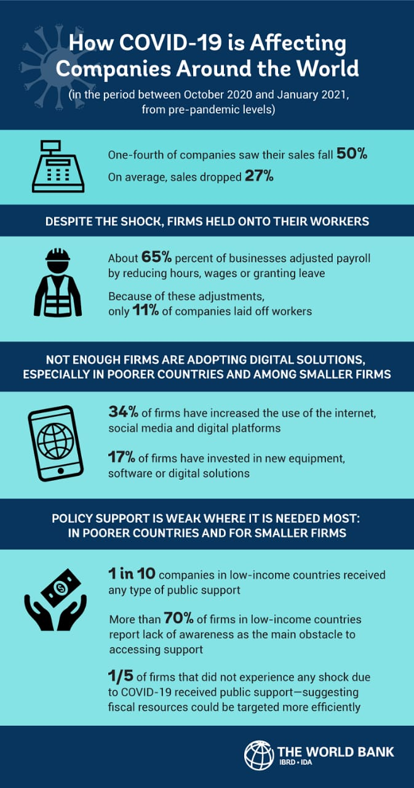
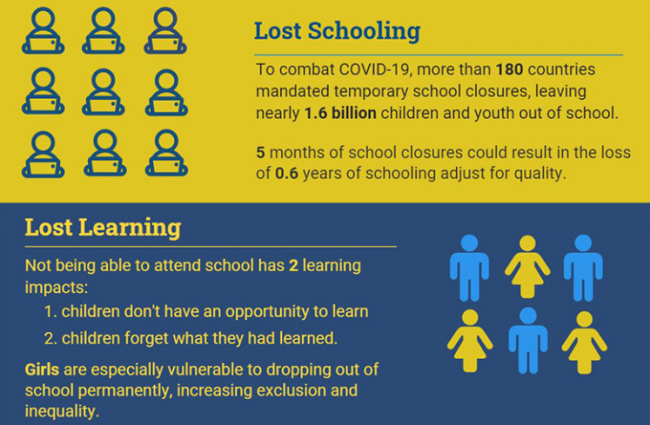
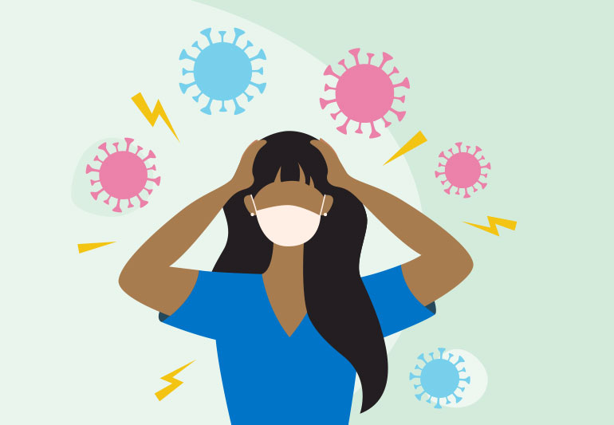

Impact of Covid 19
Impact on Companies and enterprises:
Almost 3 years into the pandemic, nearly every business in the world has been affected by COVID-19, but performance has varied widely, even within countries and industries. Data collected through the World Bank firm surveys offer some glimpses into why, and how this may be relevant for policy.

Impact on global education
Coronavirus Infectious Disease 2019 (COVID-19) has been one of the
most dreaded, recent pandemics impacting multifarious global sectors,
including education. To control contagion, affected nations ordered
academic campus closures and home-schooling plans. Schools, colleges,
and universities underwent a paradigm shift adopting internet-based
delivery of lectures, synchronously or asynchronously (recorded), with
virtual labs. Medical education suffered significantly; suspending student
internships in hospitals decreased practical exposure to clinical
specialties, impairing students’ performance, and competency.
Teachers of traditional classes, with technical assistance, undertook
rigorous trainings to restructure pedagogical and assessment strategies
online using web/mobile applications and other digital tools. This could
potentially compromise instructional quality, particularly of tertiary
education or tactile/experiential subjects, in absence of hands-on
resources and live interaction. Lack of network capacity or educational
opportunities would discourage socioeconomically challenged,
struggling, disabled, or remotely/rurally located students. COVID-19-
led isolation impeded numerous students’ attendance, learning and
cognition and caused psychological stress or anxiety among students

Impact on People's live

The current COVID-19 pandemic have affected our daily lifestyle, pressed us with fear of infection, and thereby changed life satisfaction and mental health. The current study investigated influencing cascade of changes during the COVID-19 among the lifestyle, personal attitudes, and life (dis)satisfaction for medical students, using network-based approaches. This cross-sectional survey used self-reports of 454 medical students during June and July of 2020. Depressive mood, anxiety, and intention to drop out of school were observed in 11.9, 18.5, and 38.3% of medical students, respectively. Directed acyclic graph that estimated directional propagation of the COVID-19 in medical students' daily lives initiated from the perception of unexpected event, propagated to nervous and stressed feeling, trouble relaxing, feeling like a failure, and were followed by trouble concentrating, feeling loss of control for situation, and fear of infecting colleagues. These six features were also principal mediators within the intra-individual covariance networks comprised of changed lifestyle, personal attitude, and mental health at COVID-19 pandemic. Psychosocial supports targeting nervousness, trouble relaxing and concentrating, fear of spreading infection to colleagues, feelings of a failure or loss of situational control are required for better mental health of medical students during the COVID-19 pandemic.
How covid changed our World?
Here is a small video showing us impacts of covid19 on us: